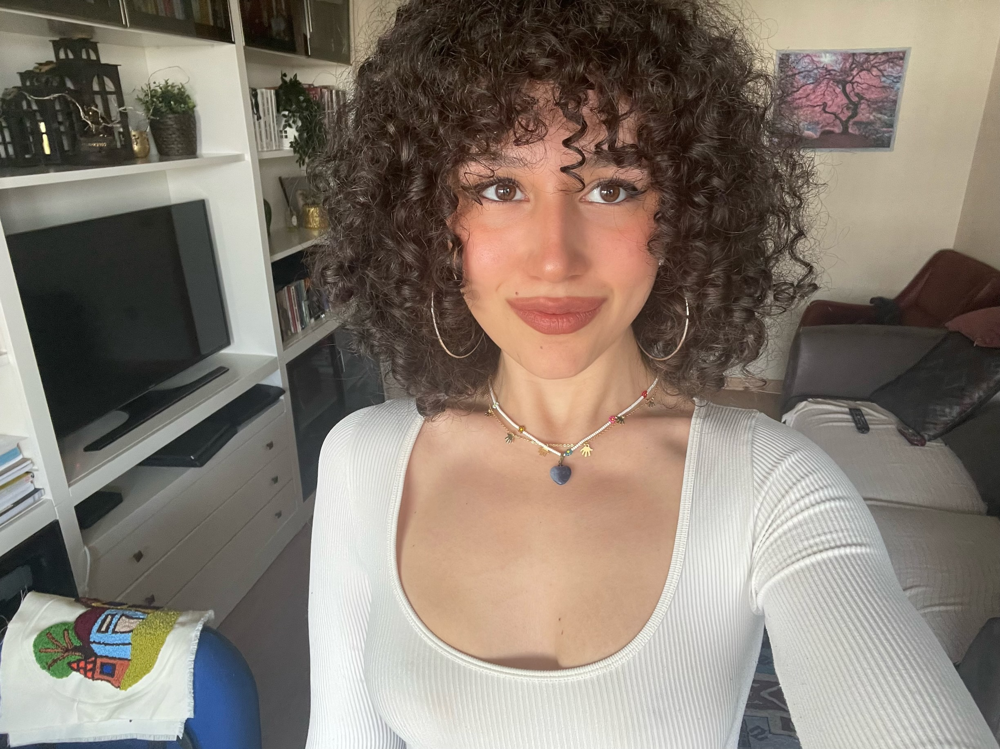

Hello! I'm Eylül Çintiriz, a Computer Science student at TOBB University. I'm passionate about coding, technology, and continually learning new things. I firmly believe that making mistakes is an essential part of the learning process, and I find satisfaction in overcoming challenges step by step while gaining valuable insights from them.

I'm always eager to explore new fields, from tech innovations to languages and music. I love discovering new experiences and am constantly on the lookout for opportunities to grow both personally and professionally.
Feel free to reach out if you'd like to connect, collaborate, or chat about anything tech-related!